大旺新洋の仕事
WHAT’s Daioh
大旺新洋には、現場監督として工事全体を管理する施工管理系、
操船や据付の技術を追求する船舶系、
機材を操作して工事を行う技能（オペレーター）系と、総務などの事務系の職務があります。
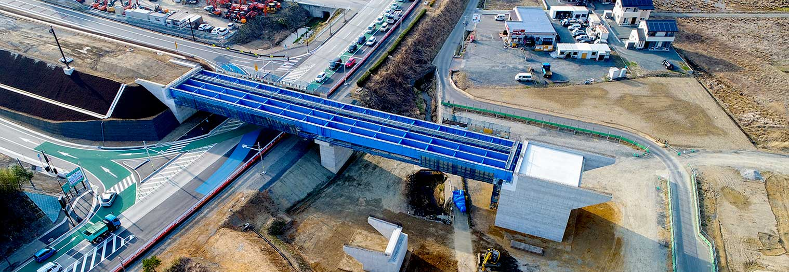
土木事業 陸上土木部門more
公共性の高いインフラ整備工事を中心としています。配属後は施工管理系の業務を行います。
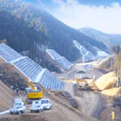
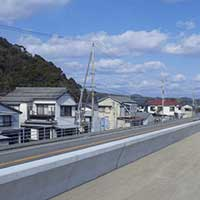
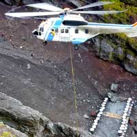
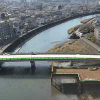
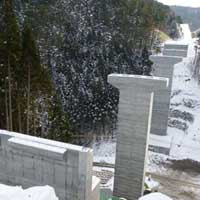
土木事業 港湾土木部門more
港の岸壁や防波堤の工事を中心としています。配属後は施工管理系の業務を行います。
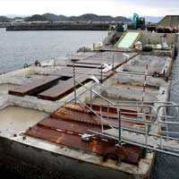
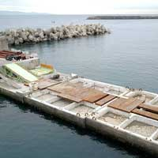
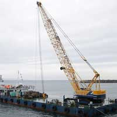
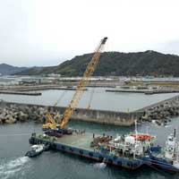
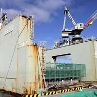
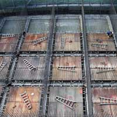

土木事業 船舶部門more
海底を掘って船のための道を造る浚渫（しゅんせつ）工事を行います。配属後は操船など浚渫作業を行います。
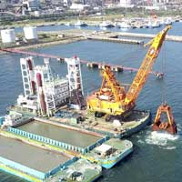

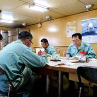
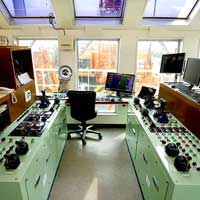
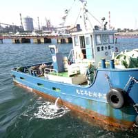
土木事業 舗装部門more
アスファルト舗装工事を中心に行います。配属後は現場での舗装工事管理やアスファルト製造を行います。
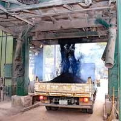
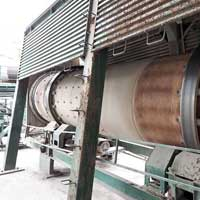
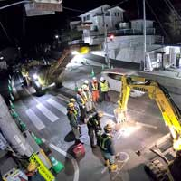

土木事業 技術研究所more
工事に使用するアスファルト合材の試験や、舗装の下に敷く土・砕石の試験を行います。
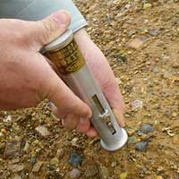
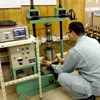
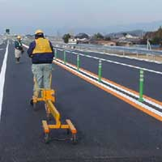
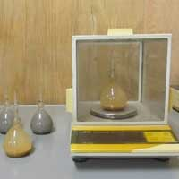
土木事業 設計積算部門more
工事受注前の見積積算から、受注後の実行予算の作成、設計、技術開発や共同研究まで、工事・施工部門の活動を支援します。
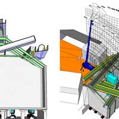
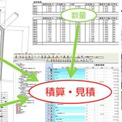
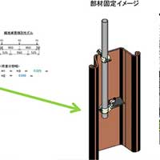
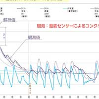
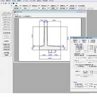
建築事業more
官公庁施設や民間のマンション、ホテルなど多岐にわたる建築物の設計、施工を行います。配属後は施工管理系の業務を行います。
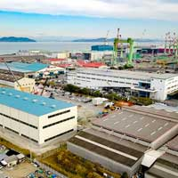
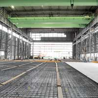
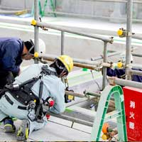
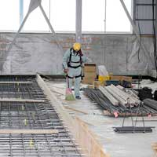
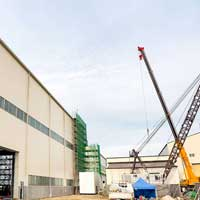
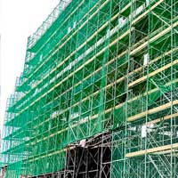
環境事業more
フロンの分解・再生、特殊ガスの処理事業と処理装置メーカーとしての事業を行います。
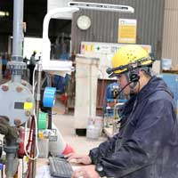
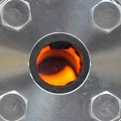
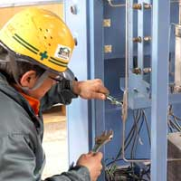
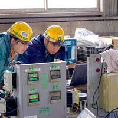
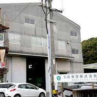

texttexttexttexttexttexttexttexttexttexttexttext
事務職more
総務、経理、情報、人事などの業務を行います。